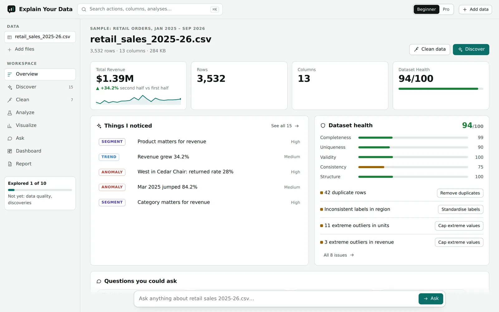
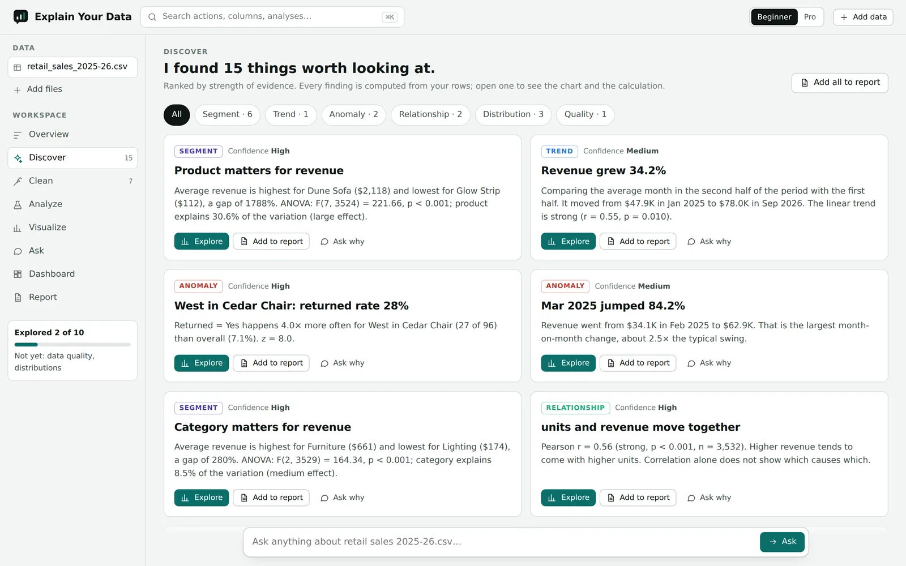
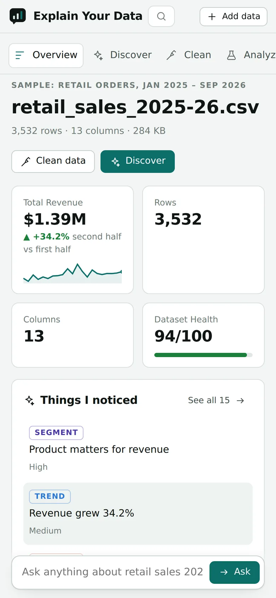
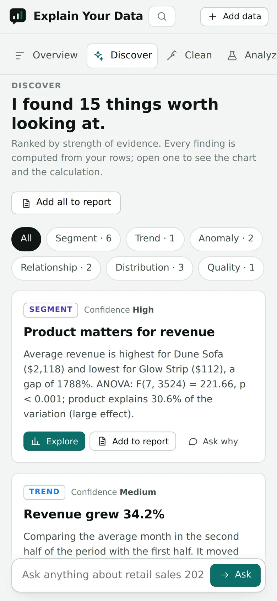

Data analysis you can check.
Upload a spreadsheet, survey export or research dataset. Explain Your Data profiles it, helps you clean it, runs the right statistics, draws the charts and explains the result in plain language. AI decides what to run and writes the explanation. Code computes every number, and a validator checks the answer before you see it.
The live app runs on free hosting that sleeps when idle, so the first visit can take up to a minute to load. Three sample datasets are built in if you don't have a file to hand.

The model never does the arithmetic.
Language models are good at choosing an analysis and explaining it. They are unreliable calculators. So the work is split, and each half does what it is good at.
Plan
Reads your question and a summary of the columns (never the rows) and picks tools: aggregate, regression, forecast, chart.
Compute
Deterministic code runs those tools on the full dataset in your browser: descriptive statistics, tests, models, forecasts.
Verify
Every number in the drafted answer is matched against the computed results. Unsupported figures are sent back once for repair, then flagged.
Explain
The checked result is written up in plain language, or rewritten for a CEO, a client, a student or an academic paper.
Without an AI key the app still works end to end: a built-in engine maps questions to the same analyses, so every feature except AI-written prose runs offline in the browser.
A number that wasn't computed doesn't get through silently.
aggregate(mean delivery_days by region) Perth 4.28 Melbourne 2.50 Sydney 2.35 … Adelaide 2.08
It tells you when a result shouldn't be trusted.
Most dashboards will happily report a 1,780% jump caused by one typo. These checks run on every upload, before any chart is drawn.
One row dominating
If a single value is more than a fifth of a total, headline totals, trends and segment shares are marked low-confidence and the row is surfaced first.
Impossible values
Negative prices, quantities, ages or durations are caught, counted in the health score and blanked (not deleted) with one click.
Outliers in skewed data
Money and counts are skewed, so a plain IQR rule flags hundreds of normal sales. Skewed columns are also checked on a log scale to isolate the real anomaly.
Trends that aren't trends
A higher second half is not called growth unless the linear trend is statistically significant. The wording says so.
Forecasts with real uncertainty
Prediction intervals are never narrower than the model's own error on held-out months, and never go below zero for quantities that can't.
Segments that aren't segments
Clustering rejects solutions where a group is a handful of unusual rows, and says "no clear segments" instead of inventing personas.
Upload, clean, analyse, ask, report.



Works on a phone
Every screen reflows to a single column, the workspace navigation becomes a scrolling tab bar, and the question box stays within thumb reach.
Built for research data, surveys and business data.
Profile and clean
- Type detection for numbers, dates, currencies (incl. € and decimal commas), IDs and Likert scales
- 0–100 health score with explained issues
- 14 replayable cleaning steps with preview, undo and lineage
Statistics
- Welch and paired t-tests, ANOVA, chi-square, Mann–Whitney, Kruskal–Wallis
- OLS regression with coefficients, p-values and R²; correlations with confidence intervals
- Forecasting with holdout model selection, k-means, PCA, Cronbach's α
Charts
- 18 chart types from a builder or a sentence ("monthly revenue by region")
- A chart validator that flags poor choices and suggests a fix
- Dashboards with shared filters; PNG and SVG export
Ask
- Questions answered with the same verified analyses
- "Why", "what changed in December" and ranking questions routed to drivers, change decomposition and averages
- Follow-ups and "explain it like…" rewrites
Reports
- Five styles: executive, academic, technical, student, marketing
- Export to HTML, PDF and Markdown
- Every chart carries the calculation that produced it
Reproducible
- Clean data to CSV, Excel or JSON
- A pandas script and an R script that replay every cleaning step on the original file
- The Python script reproduces the app's cleaned output exactly on all 11 files in our test set
Rows stay in the browser.
The analysis engine runs client-side. The server only ever sees a column summary and computed results, which is what the AI needs to plan and explain.
- File readers, type inference
- Cleaning, statistics, charts
- Validator (JS copy)
results
- Serves the workspace
- Proxies AI and file conversion
- Keys stay server-side; CSP headers
/ai/explain
- AI router (Claude / GPT) with fallback
- Number verifier and repair round
- SPSS, Stata, SAS, Parquet conversion
File contents are treated as untrusted data in every prompt, so instructions hidden inside a spreadsheet cell are not followed.
What works today, and what's next.
- Upload of 20+ formats, including ZIP bundles and Google Forms exports
- Profiling, health score, cleaning with lineage, Python/R export
- 15 analyses, 18 chart types, dashboards, five report styles
- Ask with validated answers; built-in engine when no AI key is set
- Mobile layout, dark mode; API tests and an evaluation harness
- Saved projects and version history (Postgres schema is in the repo)
- Sign-in, public share links and embeddable charts
- DOCX and PPTX report export
- Google Sheets, Drive and database connectors
- Larger-than-memory files processed on the server
Try it with your own data, or one of the samples.
No sign-up. Files are read in your browser.